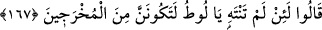
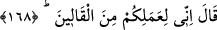
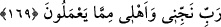
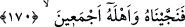

Livâta fiilini işleyene verilecek cezâ konusunda ihtilâf edilmiştir. Ebû Hanîfe (r.h.)
İmameyn’in aksine ta’zîr cezası verileceğini, had uygulanmayacağını söylemiştir. Bu
konu Hûd sûresinde genişçe anlatılmıştı. İmam Mâlik yapanı da yapılanı da evli
olsunlar veya olmasınlar recmetmek gerektiğini söylemiştir. İmam Şafiî ve Ahmed’e
göre onun hükmü zinanın hükmü ile aynıdır.
167. Onlar şöyle dediler: Ey Lût! (Bu davadan) vazgeçmezsen, iyi bil ki, sürgün
edilmişlerden olacaksın!
“Onlar” tehdid ederek “şöyle dediler: “Ey Lût!” işimizi kötülemekten ve bize
muhalefetten “vazgeçmezsen, iyi bil ki, sürgün edilmişlerden olacaksın!” zorla,
şiddetle ve kötü bir halde bu diyardan sürülenlerden ve çıkarılanlardan olacaksın.
168. Lût dedi ki: Doğrusu ben sizin bu işinizden tiksinmekteyim!
“Lût dedi ki: Doğrusu ben sizin bu işinizden” erkeklere yaklaşmanızdan
“tiksinmekteyim!” ona kızanlardan ve şiddetle buğzedenlerdenim. Sanki bu kızgınlık ve
şiddetli muhâlefet kalbimi ve ciğerimi yakmış gibi. Sadece tehdidde bulunarak onu
reddetmekle kalmam/yetinmem.
Belki Lût (a.s.) bu sözüyle onlarla aynı yerde oturmaktan hoşlanmadığını ve onların
kötü komşuluklarından kurtulmak istediğini açıklamak istemiştir. Bu yüzden onlarla
konuşmaktan yüz çevirmiş ve şöyle diyerek Allah’a yönelmiştir:
169. Rabbim! Beni ve âilemi, onların yapageldiklerinden (vebalinden) kurtar.
“Rabbim! Beni ve âilemi, onların yapageldiklerinden” onların çirkin amellerinin
uğursuzluğundan ve azâbından “kurtar.”
170. Bunun üzerine onu ve bütün âilesini kurtardık.
“Bunun üzerine onu ve bütün âilesini kurtardık.” Yani onun âile halkını ve dinde